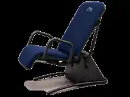

Une inclinaison globale
Le fauteuil peut basculer vers l'arrière en conservant l'angle entre le dossier et l'assise. L'ensemble reste solidaire pendant ce mouvement.
Des dispositifs pensés pour le positionnement des patients, la mobilité et l'autonomie. Découvrez le premier fauteuil thérapeutique trois-en-un développé par E.L.A.B.

Développement de dispositifs médicaux
Positionnement et autonomie des patients
Conception et fabrication adaptées
Une conception qui associe positionnement, mouvement contrôlé et utilisation adaptée. Le fauteuil E.L.A.B. s'inscrit dans une démarche de développement de solutions destinées aux professionnels.
Le fauteuil peut basculer vers l'arrière en conservant l'angle entre le dossier et l'assise. L'ensemble reste solidaire pendant ce mouvement.
L'assise se déplace latéralement de gauche à droite grâce à un mécanisme d'assistance dédié à la mobilisation du bassin.
Des poids positionnés à l'intérieur du socle contribuent à la stabilité de la structure pendant l'utilisation du dispositif.
La mobilité latérale de l'assise et l'inclinaison générale du fauteuil répondent à deux fonctions différentes. Aucun glissement de type fauteuil relax.
Le patient prend place dans le fauteuil, avec un dossier et une assise maintenant un angle d'environ 90°.
La télécommande permet d'incliner et de redresser l'ensemble. L'angle dossier–assise reste inchangé, y compris au-delà de la position horizontale.
Indépendamment du basculement général, l'assise peut se déplacer latéralement, avec une assistance mécanique destinée à faciliter le mouvement.
Présentation du fonctionnement du prototype : les amplitudes, indications et performances exactes devront être validées par E.L.A.B. avant toute publication commerciale définitive.
Fondée par Brahem Messaoui et Alain Dervaux, E.L.A.B. développe, adapte et fabrique des dispositifs médicaux visant un positionnement optimal de travail pour les patients et une utilisation facilitée en autonomie.
Leur premier produit est une chaise thérapeutique trois-en-un conçue dans l'objectif de contribuer au soulagement des tensions musculaires et des douleurs du rachis.
Le projet a bénéficié d'un accompagnement au sein de Rimbaud’Tech.
Concevoir des dispositifs au plus près des besoins des patients et des professionnels.Brahem Messaoui & Alain Dervaux
Vous êtes un professionnel de santé ou un partenaire intéressé par le projet ? Retrouvez la présentation officielle de l'entreprise et ses fondateurs auprès de Rimbaud’Tech.